216 — Proyecto: CloudShop productivo en AWS
Parte: 17 — AWS: arquitectura, automatización y operación en producción
Nivel: avanzado · Horas estimadas: 8
Laboratorio: capstone · Estado: EXECUTABLE_CORE
🎯 Propósito
Poner en producción el sistema completo de CloudShop en AWS con lo de las once clases anteriores, y comprobarlo con las pruebas negativas de toda la parte. La clase da el orden de construcción, el entregable y los criterios. Y cierra la parte 17: corrige las cinco predicciones de la clase 204 —tres acertadas, una subestimada y una fallada—, actualiza el recuento de leyes, añade la ley 26 y escribe la hipótesis de la parte 18.
📚 Resultados de aprendizaje
Al finalizar podrás:
- Construir el sistema completo en el orden que evita rehacer.
- Comprobar con las pruebas negativas de toda la parte.
- Medir coste, latencia y disponibilidad con cifras comparables.
- Corregir las cinco predicciones de la clase 204 con evidencia.
- Escribir la hipótesis de la parte 18 en forma refutable.
🧩 Conceptos centrales
| Concepto | Comprensión verificable |
|---|---|
sistema productivo |
El que tiene usuarios reales, guardia, presupuesto y continuidad comprobada. No el que funciona. |
orden de construcción |
Cuentas e identidad primero, diagnóstico y coste al final. Lo que condiciona a lo demás, antes. |
valor por defecto |
Configuración inicial de un servicio. Está elegida para que la demostración funcione. |
ley 26 |
El valor por defecto está elegido para que la demostración funcione, no para que el sistema aguante. |
prueba negativa de parte |
Comprobación acumulada de las once clases, ejecutada sobre el sistema entero. |
hipótesis de parte |
Afirmación refutable escrita antes de estudiar, que la parte siguiente corrige con evidencia. |
🧠 Modelo mental
AWS se aprende como una progresión operativa: identidad federada, infraestructura declarativa, entrega, señales, recuperación y costo controlado.
Aplicado a esta clase, separa siempre cuatro planos: intención (qué necesita el usuario), configuración (qué declaramos), estado observado (qué existe de verdad) y evidencia (cómo sabemos que cumple). Confundirlos produce diseños que se ven correctos en un diagrama pero fallan al operar.
🗺️ Flujo de razonamiento

📖 Desarrollo
1. El encargo y su orden
El encargo. Llevar a producción la plataforma de pedidos de CloudShop en AWS: con usuarios reales, guardia, presupuesto y continuidad comprobada.
El orden, por coste de cambio:
1 CUENTAS E IDENTIDAD clase 206
una cuenta por entorno; federación sin secretos
barreras de organización: nadie puede crear roles ni
desactivar auditoría desde una canalización
→ si esto llega tarde, hay que migrar todo lo anterior
2 DATOS clase 208
patrones de acceso escritos ANTES
claves de partición que reparten
lo que no encaja, replicado a otro almacén
→ la decisión más cara de cambiar de la parte
3 CÓMPUTO clases 207, 212, 213
funciones para lo que encaja; contenedores para lo demás
concurrencia reservada calculada por las conexiones
memoria y tamaños medidos, no copiados
4 ENTRADA Y SEGURIDAD clases 205, 209
distribución, bucket privado, capa 7 detrás
testigo de acceso validado con las siete comprobaciones
filtrado en modo cuenta antes de bloquear
5 ASÍNCRONO clase 210
bus, cola por consumidor, idempotencia
cola de fallidos con alerta por antigüedad y reproceso
probado
6 OBSERVABILIDAD clase 211
declarada junto al servicio; alertas que llegan a alguien
7 COSTE clase 214
etiquetas obligatorias en la creación; presupuestos con
acción; retirada de lo ocioso
8 CONTINUIDAD clase 215
segunda región, y el ejercicio dirigido que la comprueba
Y la regla que resume la parte:
en cada uno de los ocho pasos, la primera tarea es
REVISAR LOS VALORES POR DEFECTO
→ porque están elegidos para que la demostración funcione
ley 26
Y el error de método que hunde este proyecto:
empezar por el paso 3, que es lo divertido
→ y descubrir en el paso 2 que la clave de partición está
mal y hay que migrar clase 208
2. El entregable, las pruebas y la evaluación
El documento, con lo que hay que poder enseñar:
1 el problema, con la cifra que lo demuestra
2 patrones de acceso, escritos y fechados antes del modelo
3 arquitectura: cuentas, servicios, datos, entrada, salida
4 la lista de VALORES POR DEFECTO cambiados y por qué
5 concurrencia, plazos y capacidad, con su cálculo
6 seguridad: testigos, autorización, filtrado, perímetro
7 observabilidad: qué se vigila y qué solo se consulta
8 coste: desglose, atribución y coste por unidad de negocio
9 continuidad: modo, plazos medidos y ejercicio ejecutado
10 pruebas negativas, con los fallos publicados
11 lo que NO se hace, y por qué
Las pruebas negativas de la parte, que son el criterio de terminado:
☐ leer un objeto por la URL directa del bucket
☐ asumir el rol de producción desde otra rama o repositorio
☐ llamar a la API con testigo de identidad, caducado o
alterado
☐ pedir el recurso de otro usuario con testigo válido
☐ llamar a la pasarela saltándose la distribución
☐ registrar un nombre con apóstrofo (que NO se bloquee)
☐ superar el límite de ritmo y recibir 429
☐ enviar la misma petición 50 veces en paralelo
☐ enviar el mismo mensaje 50 veces a la cola
☐ dejar un mensaje en la cola de fallidos y esperar la
alerta
☐ reprocesar 10.000 mensajes sin tumbar la base
☐ agotar la concurrencia y comprobar que se rechaza en vez
de caer
☐ desplegar una versión rota y ver la reversión automática
☐ desplegar durante tráfico y contar peticiones cortadas
☐ provocar la condición de cada alerta y ver si llega
☐ crear un recurso sin etiquetas
☐ borrar la pila y comprobar que los datos sobreviven
☐ perder la región primaria y cronometrar los cinco tramos
☐ volver a la primaria sin dos escritores
Y los criterios de evaluación, publicados antes:
```text peso 1 los patrones de acceso están fechados antes del modelo 3 2 la lista de valores por defecto cambiados es explícita 3 3 no queda ninguna credencial de larga duración 3 4 la concurrencia está calculada, no puesta a ojo 2 5 la autorización comprueba la propiedad del recurso 3 6 toda operación con efecto es idempotente 3 7 cada alerta se ha probado provocando la condición 2 8 el coste atribuido supera el 90 % 2 9 hay coste por unidad de negocio 2 10 la continuidad se midió ejecutándola 3 11 las pruebas negativas se ejecutaron y hay fallos publicados 3 12 está escrito lo que no se hace 1
Y el 11 pesa como los que más, con la evidencia acumulada:
```text
proporción de pruebas negativas que han fallado la primera
vez en este programa
clase 144 3 de 11 27 %
clase 168 5 de 11 45 %
clase 179 9 de 31 29 %
clase 189 3 de 14 21 %
clase 204 6 de 15 40 %
→ un proyecto con cero fallos no las ejecutó ley 22
3. Cierre de la parte 17: corrección de las cinco predicciones
Las cinco predicciones de la clase 204, corregidas con la evidencia de las clases 205 a 215.
1. «bajar a un proveedor concreto revelará que buena parte de
lo que hemos tratado como decisiones de arquitectura son
valores por defecto; y estarán mal elegidos para
producción en más de la mitad de los casos»
CORRECTA, y con margen. De los valores por defecto que
hubo que revisar en las once clases, la cuenta salió así:
bucket con alojamiento estático y política pública, error
404 convertido en 200, política de caché heredada,
invalidación con comodín, memoria de función en el mínimo,
plazo en 30 s, sin concurrencia reservada, sin alias,
visibilidad de cola en 30 s, sin informe de fallo parcial,
grupos de registros sin caducidad, nivel de depuración en
producción, etiquetas de imagen mutables, registro sin
caducidad, drenaje corto, porcentaje mínimo sano al 50 %,
periodo de gracia menor que el arranque, circuito de
despliegue desactivado y escalado por CPU. Diecinueve, y
los diecinueve había que cambiarlos.
2. «el diseño de la base de datos por patrones de acceso será
la decisión más cara de cambiar de la parte, y la que más
veces se toma sin haber escrito los patrones»
CORRECTA en las dos mitades. Fue la más cara: seis semanas
de dos personas para cambiar una clave de partición que se
había elegido en una tarde, por la primera consulta que
pidió negocio. Y se tomó sin escribir los patrones, que
habrían costado tres horas. Pero incompleta en algo: el
error más CARO fue ese, y el más FRECUENTE fue otro —los
valores por defecto, que aparecieron en casi todas las
clases—.
3. «la eliminación de secretos mediante federación resultará
sencilla técnicamente y lenta organizativamente: el
obstáculo será quién tiene permiso para cambiarla»
FALLADA, y en las dos mitades. La parte técnica NO era
sencilla: tenía una trampa que dejó el sistema PEOR que
con la clave estática, porque una condición de sujeto con
comodín permitía a cualquiera de doscientos catorce
miembros desplegar en producción creando un repositorio. Y
la lentitud no vino de los permisos: vino de que el
inventario decía cuarenta y una canalizaciones y había
cuarenta y nueve. Predijimos el obstáculo equivocado, y lo
más grave es que dimos por resuelta la parte que tenía el
fallo.
4. «más de la mitad de los problemas del proyecto productivo
no serán de AWS sino de lo mismo de siempre: leyes 25, 15
y 22»
CORRECTA. Una política pública añadida «para probar» y no
retirada; ocho canalizaciones fuera del inventario, una
con credenciales de administrador para un sistema retirado
en 2023; once alertas a canales sin suscriptores, entre
ellas la de la cola de fallidos que ocho meses después
dejó cuarenta y un mil mensajes a un día de caducar; dos
bases de datos de pruebas encendidas catorce meses; treinta
y un entornos efímeros que nunca caducaron; y en el
ejercicio de continuidad, seis de ocho hallazgos que no
eran de infraestructura.
5. «el coste real será entre dos y cuatro veces la estimación
inicial, y la diferencia estará casi toda en partidas que
no son cómputo»
CORRECTA EN EL MECANISMO Y CORTA EN LA CIFRA. La segunda
mitad se cumplió por completo: el cómputo resultó ser el
17 % de la factura de la API y el 20 % de la de la
plataforma, y las partidas sorpresa fueron pasarela,
registros, índices, transferencia entre zonas y capas
huérfanas del registro de imágenes. Pero el factor no fue
de dos a cuatro: fue de SIETE, porque la estimación
inicial solo contaba invocaciones y duración.
Marcador: tres correctas, una correcta y subestimada, una fallada. Y la fallada enseña más que las otras cuatro: dimos por resuelta la parte técnica y pusimos el problema en las personas, y resultó que la parte técnica tenía una trampa que empeoraba la seguridad mientras parecía mejorarla.
4. Recuento de leyes, ley 26 e hipótesis de la parte 18
El recuento de leyes, cerrada la parte 17.
ley 13 lo que no se mira deja de funcionar en silencio 45
ley 15 la señal existe y nadie la mira 34
ley 22 un procedimiento nunca ejecutado no funciona 29
ley 14 el coste se decide al crear, no al pagar 28
ley 16 un control que estorba se rodea 26
ley 20 lo que no tiene dueño se filtra y se desperdicia 26
ley 21 el acoplamiento vive en quién escribe 21
ley 23 la capacidad la limita lo que ya se mantiene 13
ley 25 lo provisional sobrevive a su motivo 12
ley 24 lo que no está en el diagrama no se analiza 11
ley 19 la compensación hace invisible el fallo 10
ley 17 se optimiza la medida, no el objetivo 10
ley 18 lo asíncrono traslada la garantía, no la elimina 8
Y la parte 17 obliga a escribir una ley nueva, que es la más específica de todas y la que más dinero y latencia ha movido en esta parte:
LEY 26
el valor por defecto está elegido para que la
demostración funcione, no para que el sistema aguante
apariciones en esta parte 5
clase 205 alojamiento estático del bucket, 404 a 200,
política de caché heredada, invalidación con
comodín
clase 207 memoria mínima, plazo de 30 s, sin
concurrencia reservada, sin alias
clase 210 visibilidad de 30 s, sin informe de fallo
parcial de lote
clase 211 grupos de registros sin caducidad, nivel de
depuración en producción
clase 212 drenaje corto, mínimo sano al 50 %, gracia
menor que el arranque, escalado por CPU
y lo que la distingue
no habla de descuido ni de falta de dueño
habla de que el valor inicial está OPTIMIZADO PARA OTRA
COSA: para que funcione en cinco minutos en un tutorial
→ el remedio no es vigilar: es revisar la lista de
valores por defecto como primera tarea de cada servicio
La hipótesis de la parte 18 (clases 217 a 228, Azure en producción), escrita antes de estudiarla para que la clase 228 la corrija:
1. los valores por defecto de Azure estarán mal elegidos para
producción en una proporción parecida a los de AWS, pero
fallarán en otro sitio: los de AWS tienden a ser
permisivos en red y almacenamiento; los de Azure lo serán
en ámbito de identidad y de asignación de permisos
ley 26
2. la jerarquía de grupos de administración y suscripciones
resultará ser el equivalente del plan de direcciones: se
decide en una tarde, condiciona una década y renumerarla
costará meses ley 14
3. la identidad será el eje de toda la parte: lo que en AWS
se resuelve con roles y políticas se resolverá aquí con
el directorio, y el error más frecuente será un ÁMBITO DE
ASIGNACIÓN demasiado amplio —el equivalente exacto de la
condición de sujeto con comodín de la clase 206
4. la mayoría de los conceptos técnicos se corresponderán uno
a uno entre las dos nubes; lo que NO se corresponderá es
el modelo operativo, y trasladar «la misma arquitectura»
costará más en operación que en código clase 158
5. los problemas del proyecto productivo volverán a ser, en
mayoría, de las leyes 25, 15 y 22. Y aquí añadimos algo
incómodo: si esta predicción vuelve a acertar por cuarta
parte consecutiva, dejará de tener mérito y pasará a ser
una descripción, no una hipótesis. Lo que habrá que
preguntarse entonces no es si acertamos, sino por qué,
sabiéndolo, sigue ocurriendo
Y el cierre de la parte 17: de once clases, lo que más dinero y latencia movió no fue ninguna decisión de arquitectura, sino diecinueve valores por defecto que había que cambiar y que funcionaban perfectamente sin cambiarlos. La parte 18 hace el mismo recorrido en Azure, empezando por lo que allí condiciona todo lo demás: la jerarquía de suscripciones y grupos de administración. Es la clase 217.
🔬 Ejemplo trabajado
El sistema de CloudShop en producción en AWS, montado con el método de la parte. Lo que sigue es el resumen del entregable, la lista de valores por defecto cambiados, y el resultado de las diecinueve pruebas negativas —de las que fallaron siete.
La arquitectura, en una página:
CUENTAS organización con 4 cuentas: producción,
preproducción, desarrollo, seguridad
barreras: sin crear roles, sin desactivar
auditoría, sin borrar copias
IDENTIDAD federación desde el repositorio, 4 roles por
propósito, producción atada a entorno
protegido con 2 aprobaciones
credenciales de larga duración: 2, ambas de
terceros, con rotación y fecha de revisión
DATOS DynamoDB con tabla única para pedidos y
clientes; 9 patrones escritos y fechados
búsqueda y analítica alimentadas por el flujo
de cambios
PostgreSQL solo para facturación heredada
CÓMPUTO funciones para la API de pedidos
contenedores para búsqueda y para el
procesador de eventos
Kubernetes solo para las cargas del equipo de
datos
ENTRADA CloudFront → capa 7 → API HTTP → funciones
bucket privado con control de acceso al origen
filtrado con 4 grupos, ajustados tras 3
semanas en modo cuenta
ASÍNCRONO bus → 4 colas → 4 consumidores
todos idempotentes; todas con cola de fallidos
OBSERVABILIDAD declarada en la plantilla de cada servicio
584 series de métricas, 63 alertas, 1 canal
COSTE 5 etiquetas obligatorias, barrera de creación
presupuestos con acción en no producción
retirada automática de lo ocioso
CONTINUIDAD activo-pasivo en caliente en eu-central-1
ejercicio ejecutado 2 veces
La lista de valores por defecto cambiados, que fue el entregable más útil:
servicio por defecto cambiado a
────────────────────────────────────────────────────────────
S3 alojamiento estático desactivado
S3 acceso público bloqueado
S3 sin versionado activado
CloudFront caché heredada política propia
por ruta
CloudFront sin cabeceras seg. política de
cabeceras
CloudFront 404 → 200 con index función de borde
por extensión
Lambda 128 MB 1.024 MB (medido)
Lambda plazo 30 s 8 s
Lambda sin concurrencia reservada, por
reservada conexiones
Lambda sin alias alias + escalonado
API REST HTTP
SQS visibilidad 30 s 300 s (por lote)
SQS sin fallo parcial activado
SQS retención 4 días 14 días
CloudWatch sin caducidad 21 días
CloudWatch nivel depuración información
ECR etiquetas mutables inmutables
ECR sin caducidad 10 últimas por rama
ECS drenaje 30 s 60 s
ECS mínimo sano 50 % 100 %
ECS gracia 30 s 120 s
ECS sin circuito activado
ECS escalado por CPU peticiones por
tarea
DynamoDB lectura fuerte eventual salvo 2
patrones
total cambiados 24
que funcionaban sin cambiarlos 24
Y la observación que el equipo escribió:
los veinticuatro funcionaban
ninguno daba error
ninguno aparecía en ninguna alerta
y los veinticuatro habrían causado un problema en
producción, entre coste, latencia, pérdida de datos o
seguridad ley 26
Las diecinueve pruebas negativas: siete fallaron.
✓ URL directa del bucket denegada
✓ rol de producción desde otra rama denegado
✓ testigo de identidad, caducado o alterado rechazado
✗ recurso de otro usuario con testigo válido
→ 2 de 11 rutas no comprobaban la propiedad; las 2 eran
rutas nuevas añadidas después de la revisión
clase 209
✓ llamada a la pasarela saltándose la distribución denegada
✓ registro con apóstrofo aceptado
✓ límite de ritmo 429
✓ misma petición 50 veces en paralelo 1 efecto
✗ mismo mensaje 50 veces a la cola
→ el consumidor de notificaciones no era idempotente:
se había añadido en el último mes sin la comprobación
✓ mensaje en cola de fallidos → alerta 41 s
✗ reprocesar 10.000 mensajes
→ tumbó la base la primera vez: el procedimiento tenía
límite de ritmo y quien lo ejecutó no lo usó porque
no estaba en el primer paso clase 210
✓ agotar la concurrencia 429, sin
caída
✓ versión rota revertida
en 2 min
✗ desplegar durante tráfico
→ 14 peticiones cortadas en el servicio de búsqueda:
su aplicación no atendía la señal de terminación
clase 212
✗ provocar la condición de cada alerta
→ 5 de 63 no llegaron; 3 por umbral mal puesto y 2 por
destino equivocado
✓ recurso sin etiquetas rechazado
✗ borrar la pila y comprobar los datos
→ la tabla de idempotencia NO tenía política de
retención y se borró
→ el sistema siguió funcionando, pero perdió la memoria
de lo procesado: 1.100 mensajes en vuelo se habrían
duplicado al reintentarse
✗ perder la región primaria
→ 12 min 40 s frente a los 10 min 40 s del último
ejercicio: había 2 servicios nuevos sin réplica de
imagen en la secundaria
✓ volver sin dos escritores correcto
Y el análisis de las siete:
dos por servicios AÑADIDOS después de la última revisión
(rutas sin comprobación de propiedad, consumidor sin
idempotencia)
dos por procedimientos con pasos en mal orden o umbrales
mal puestos
dos por omisiones al crecer (retención de una tabla nueva,
réplica de imágenes de servicios nuevos)
una por una aplicación que no atendía la señal
→ SEIS de las siete se deben a lo mismo: el sistema creció
y las comprobaciones no crecieron con él
→ y por eso las pruebas negativas se ejecutan
PERIÓDICAMENTE, no una vez ley 22
Las cifras del sistema en producción, tras tres meses:
```text estimado medido p99 del flujo de compra < 500 ms 412 ms disponibilidad observada 99,8 % 99,86 % techo por dependencias 99,84 % — coste mensual 12.000 € 16.700 € coste por pedido 0,050 € 0,046 € tiempo de conmutación de región 15 min 12 min 40 s pérdida de datos en conmutación 1 min 22 s coste atribuido 90 % 94,1 % alertas por turno < 2 0,7 proporción de alertas accionables > 80 % 89 % despliegues al mes — 94 revertidos automáticamente — 5 que causaron incidente — 0
Y las tres cosas que se decidió no hacer, registradas:
```text
no adoptar activo-activo: 7.700 €/mes frente a 410 € de
pérdida evitada; se revisa si el negocio de empresa
supera el 15 % de los ingresos
no migrar los servicios web a Kubernetes: funcionan
no unificar todo en contenedores: las funciones cubren su
caso con menos operación
La lección que este proyecto deja: el entregable que más valor tuvo no fue el diagrama ni el cálculo de capacidad: fue la tabla de veinticuatro valores por defecto cambiados, todos los cuales funcionaban sin cambiarlos. Y de las diecinueve pruebas negativas, seis de las siete que fallaron se debieron a que el sistema creció y las comprobaciones no crecieron con él: rutas nuevas sin comprobar propiedad, un consumidor nuevo sin idempotencia, una tabla nueva sin retención y dos servicios nuevos sin réplica de imagen.
🧪 Laboratorio guiado
Ejecuta desde la raíz:
python classes/part-17-aws-production-architecture/216-proyecto-cloudshop-productivo-en-aws/lab.py
El laboratorio selecciona el motor de práctica capstone y produce
lab_result.json. El escenario, sus comprobaciones y el artefacto esperado corresponden a
esta clase; no requiere credenciales y deja explícito qué debe revalidarse en un sandbox real.
- Lee
exercise.stepsy formula una predicción antes de ejecutar. - Ejecuta la práctica y verifica todos los elementos de
checks. - Provoca el caso de
negative_testy explica la señal observada. - Materializa
cloudshop-awsenevidence/usando la plantilla indicada. - Para proveedor real, sigue
sandbox.requires, registra costo y ejecutadestroy.
Evidencia esperada
El artefacto principal es un incremento integrado, demostrable y documentado. Además, la entrega debe incluir el comando ejecutado, la salida estructurada y una conclusión que no exceda lo observado.
🏆 Reto verificable
Construye cloudshop-aws para el caso CloudShop. Incluye una alternativa descartada,
un supuesto que pueda falsarse, una prueba de fallo y una decisión de rollback.
✅ Criterio de aceptación
- [ ]
lab.pytermina con código 0 y genera JSON válido. - [ ] La entrega conecta al menos tres requisitos con mecanismos verificables.
- [ ] Existe una prueba positiva y una prueba negativa con evidencia.
- [ ] Seguridad, costo y operación aparecen como decisiones, no como anexos.
- [ ] Se declara una limitación y una condición que obligaría a revisar el diseño.
- [ ] Otra persona puede repetir el recorrido sin conocimiento tácito.
⚠️ Errores frecuentes
| Síntoma | Causa probable | Corrección |
|---|---|---|
| Hay que migrar datos a mitad del proyecto | Se empezó por el cómputo y la clave de partición se eligió por la primera consulta que pidió negocio | Escribe los patrones de acceso con su frecuencia y latencia antes de modelar, y fecha ese documento. |
| Todo funciona en pruebas y falla el primer día de carga real | Los valores por defecto están elegidos para que la demostración funcione | Revisa la lista de valores por defecto como primera tarea de cada servicio y documenta cuáles cambiaste y por qué. |
| Las comprobaciones pasan pero el sistema tiene huecos nuevos | Se añadieron servicios y rutas después de la última revisión | Ejecuta las pruebas negativas periódicamente y añade una por cada capacidad nueva, no solo al terminar. |
| Borrar una pila se lleva datos por delante | Los recursos con datos no tienen política de retención y viven en la misma pila que el código | Separa las pilas por ciclo de vida y pon retención a todo lo que guarde estado, incluidas las tablas auxiliares. |
| El procedimiento de recuperación se ejecuta mal bajo presión | Los pasos críticos no están al principio ni son obligatorios | Pon el límite de ritmo y los pasos de seguridad como primer paso, y haz que lo ejecute alguien que no lo escribió. |
| La estimación de coste se queda muy corta | Solo se contó el cómputo | Estima pasarela, registros, índices, transferencia entre zonas y almacenamiento de imágenes; suelen sumar más que el cómputo. |
🛡️ Seguridad, ética y costo
Trabaja con cuentas propias o sandboxes autorizados. No publiques secretos, identificadores reales ni datos personales. Antes de crear recursos pagos define presupuesto, etiquetas y comando de destrucción; después verifica que no queden recursos huérfanos. Los ejemplos locales enseñan contratos, pero no certifican cumplimiento ni disponibilidad de producción.
❓ Preguntas de comprobación
- ¿Por qué la primera tarea de cada servicio es revisar sus valores por defecto?
- ¿Cuál de las cinco predicciones de la clase 204 falló y qué enseña su fallo?
- ¿Qué dice la ley 26 y en qué se distingue de la 25?
- ¿Qué proporción de pruebas negativas ha fallado la primera vez en este programa?
- ¿Por qué seis de las siete pruebas fallidas del proyecto tenían la misma causa de fondo?
🔗 Referencias
- AWS (2025). Well-Architected Framework. https://docs.aws.amazon.com/wellarchitected/latest/framework/welcome.html
- AWS (2025). Serverless Application Lens. https://docs.aws.amazon.com/wellarchitected/latest/serverless-applications-lens/welcome.html
- AWS (2025). Security Reference Architecture. https://docs.aws.amazon.com/prescriptive-guidance/latest/security-reference-architecture/welcome.html
- Beyer, B. y otros (2018). The Site Reliability Workbook. https://sre.google/workbook/table-of-contents/
- Basiri, A. y otros (2016). Chaos engineering. https://ieeexplore.ieee.org/document/7503833
- Documentación oficial vigente del servicio implementado; registra URL y fecha de consulta.
📥 Descargar: Parte 17 en PDF · Recorrido de AWS en PDF · Manual integral